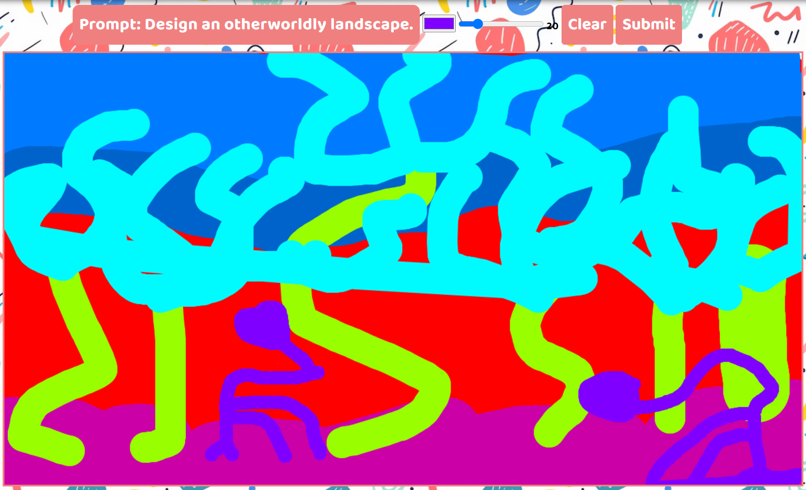
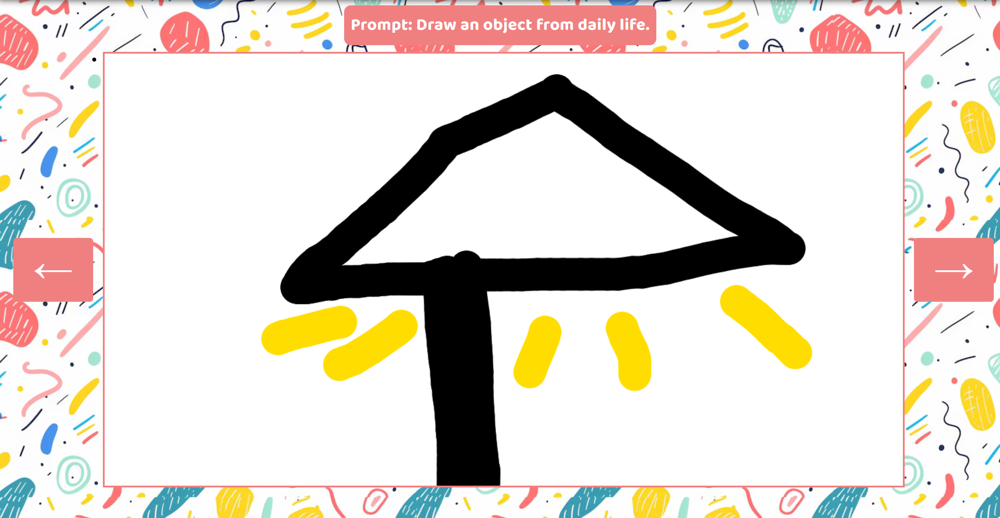
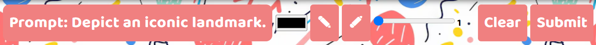

On this website, you can create fantastical artwork based on randomly given prompts, which you can then
submit to be viewed. To the right is an example image showcasing our drawing page.


This website was created so inspiring artists can anonymously submit their art to be viewed by all other
users on the platform. It's a place where they can compare and review their drawings based on other people's
artwork. On the left is an example image of our gallery.
Toolbar tutorial

Here we see our toolbar with 7 elements to it. The first element is our prompt, which is refreshed every 12
hours along with the gallery. Try to draw something based on that prompt with our next elements. The black
square you see is a color picker, which changes our stroke color. The image next to it is our pen tool, with
the one beside being the eraser; click on these to use them. That long blue line indicates the stroke width;
move it along to find the right size. Finally, if your drawing just doesn't sit right with you, hit clear to
get a fresh new canvas, but if you like it, click submit and send it to the gallery. Now that you know what
our toolbar does, click on the drawing button in the navigation bar and get to drawing.